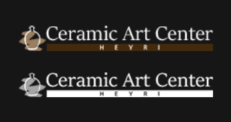
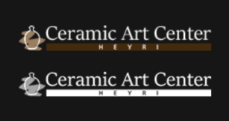

세 번째 포트폴리오

Heyri
Ceramic
Art
Center
DATA
2020.10.19 - 11.16
DEVICE1920*1080
PARTICIPATIONDesign 50%, Markup 40%

Heyri
Ceramic
Art
Center
2020.10.19 - 11.16
DEVICE1920*1080
PARTICIPATIONDesign 50%, Markup 40%
도자기의 차분한 분위기와 어울리는 컬러를 사용하였으며
트랜드와 맞지 않는 기존의 웹사이트에 세련된 느낌을 부여하였습니다.

브랜드 인식을 높이기 위하여 세련된 느낌의 로고로 리디자인하였습니다.
 

메인컬러로 #1C98D6을 사용하였고 비비드한 컬러를 사용하여 포인트를 주었습니다.
활용하는 컨텐츠가 다양하다보니 많은 색상의 사용은 지양하고, 그레이스케일을 적절하게 사용하였습니다.
Main Beige - #E2CEBD
R : 226 G : 206 B : 189
Point Brown - #442A0D
R : 68 G : 42 B : 13
Main text - #000000
R : 0 G : 0 B : 0
Sub text - #999999
R : 153 G : 153 B : 153
깔끔하면서 가독성을 높일 수 있는 고딕체를 위주로 사용하였으며,
영문은 Josefin Sans를 사용하여 도자기의 둥그스름한 모양과 매치되도록 하였습니다.
구조화되지 않은 네비게이션으로
혼란을 주는 UX
<기존 홈페이지>
브랜드를 나타내는 메인 페이지가 다소 어지럽게 정렬되어 있어
사용자가 불편함을 느낄 수 있는 구조였고, 사이트 주 방문 이유인 체험예약을
한 번에 찾아보기 어려워 홈페이지의 이용에 불편을 느꼈으리라 예상하였습니다.
그리하여 구조화된 네비게이션과 예약페이지를 구성하고
여기저기 나열된 체험사진들을 앨범 페이지에서 한꺼번에 감상할 수 있도록 하여
사용자의 편의성을 높이고 이탈율을 줄이는 것을 목표로 하였습니다.